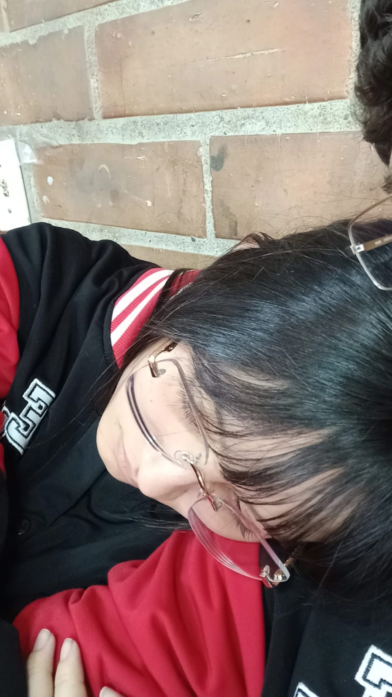
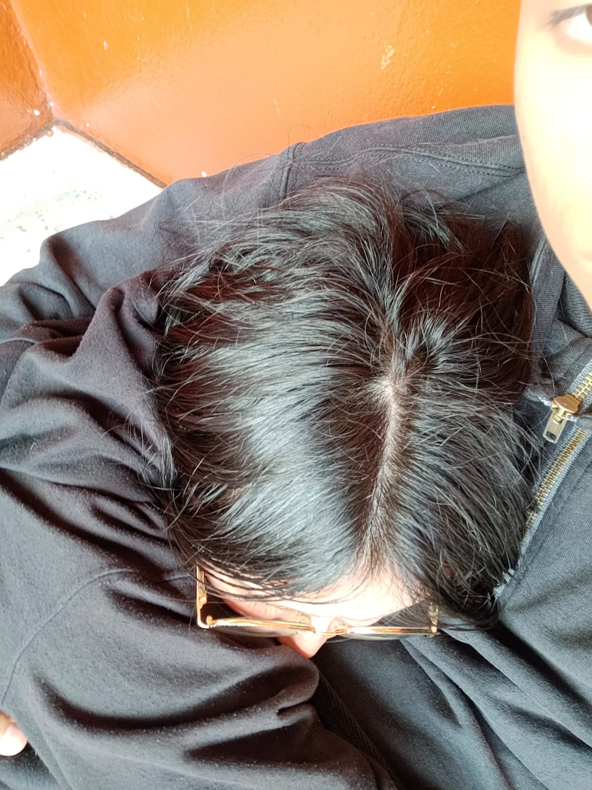
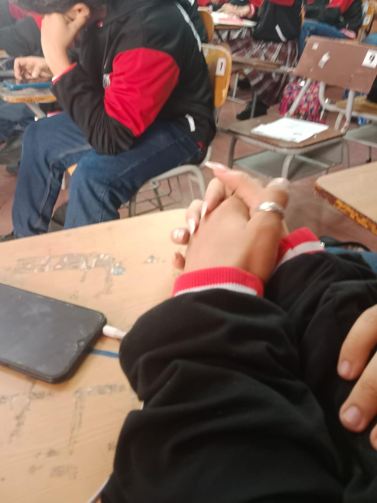

Hola Amor 💕



Me resulta increíble el poder del tiempo. Pensar que hace un año estábamos en el colegio, pasábamos todos los días juntos y nos veíamos a diario, y ahora estamos formando un futuro con las cosas que decíamos de niños que seríamos.
Yo ya cumplí uno de los sueños que tenía de niño, y esa es mi prueba de que los sueños se cumplen; esa prueba eres tú.
Siempre había soñado con alguien que de verdad me quisiera y me entendiera, pese a mi complicada forma de ser; que en momentos de tristeza no me dejara solo y, en momentos de frustración, me entendiera y me consolara.
Y por eso, tú eres todo lo que algún día soñé. El tiempo contigo pasa volando, pero el tiempo sin verte se hace eterno y doloroso. No sabes cuántas cosas quisiera darte, las infinitas veces que quisiera verte y lo mucho que anhelo abrazarte.
Sé que mi futuro es incierto; sin embargo, tengo algo claro: vaya a donde vaya, quiero ir contigo. Quiero que seas tú quien me acompañe en mi camino. Y aunque no quisiera llegar a viejo, por ti quisiera que existiéramos eternamente para nunca perderte.
Hay algo que me dejó pensando, y es que “el amor es la decisión más radical que hay”, y es algo muy cierto, porque pese a las dificultades que hay, nunca nos hemos abandonado. Más allá del compromiso y la disciplina, para mí es una prueba de la fuerza que tiene nuestro amor.
Gracias por este añito juntos y por los que vienen. Quisiera haberte mostrado esto en persona, pero Dios sabe sus cosas, y por algo no se dio vernos.
Te amo mucho, mi amor.